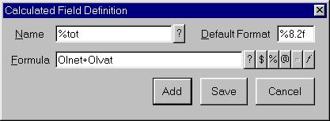
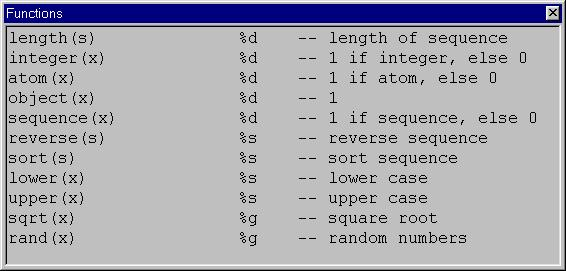

The Calculated Field Definition Window.
Note that calculated fields are listed in alphanumeric order (capital letters before lowercase), in the Calculated Fields Lookup window, so careful choice of name should be used to group related calculations. It is also sensible to consider whether or not a calculation is general purpose, or specific to the current layout or a particular record.
When typing in a calculation name, if the calculation already exists, the Formula is updated
and the field background set to Gray as a warning that you are editing an existing field (but
returned to white when editing the formula).
The text of the default button is also changed between Add and Replace to indicate whether
an existing expression is being amended or a new field is being defined.
Either type the expression manually, or:
Press F1 or click on the first button to the right of the formula field to display the dictionary fields lookup. Select OHnet.
Type +
Press F1 and select OHvat. The expression is now complete.
Standard fields, previously defined calculations, summations, and functions may be selected in much the same way:
The six buttons to the right of the formula window correspond to pressing F1 to F6 in the Formula field. The fifth button is always present, but disabled on this window, to be consistent with the Field Details Window.
Application developers should already know that calculations are far easier to perform in the datastream creation program. However, end users making minor ad hoc changes to reports may not have or want access to the program source, which is mainly why calculated fields exist.
See also the sections on Standard Values, Operators, Precedence and Associativity, Negative Indexes, A Brief Introduction to sprintf, Complexity Example, and Calculation Errors.

The Function Lookup Window.
Cursor to the required line and press Return, or double click on a line to select the field.
The functions available are:
length(s) -- length of sequence. An error occurs if not a sequence.
integer(x) -- 1 if integer, else 0
atom(x) -- 1 if atom, else 0
object(x) -- 1
sequence(x) -- 1 if sequence, else 0
reverse(s) -- reverse sequence
sort(s) -- sort sequence
lower(x) -- lower case
upper(x) -- upper case
sqrt(x) -- square root
rand(x) -- random numbers
floor(x) -- round down. Note that floor(-1.2) is -2.
log(x) -- natural logarithms
not_bits() -- bitwise not
ordinal(i) -- returns "1st", "2nd" etc - suffixed form of integer parameter.
-- returns "ordinal() error" if not passed a positive integer.
not(x) -- logical not of x, equivalent to not x
sprint(x) -- returns number sequence representation.
-- Eg sprint("hello") returns {104,101,108,108,111}.
-- For printing text, use sprintf.
fact(i) -- factorial, 1*2*3..i, equivalent to i!
-- if not passed an atom returns "fact() error".
remainder(x1,x2)-- remainder after dividing x1 by x2
and_bits() -- bitwise and
or_bits() -- bitwise or
xor_bits() -- bitwise xor
equal(x1,x2) -- 1 if equal, else 0
compare(x1,x2) -- -1 if x1x2
append(s,x) -- appends x to s. length is length(s)+1.
prepend(s,x) -- prepend x to start of s. length is length(s)+1.
repeat(x,i) -- create a sequence of i x's
sprintf(s,{x}) -- print to string, see below
find(x,s) -- index of x in s, else 0
match(s1,s2) -- slice start of s1 in s2, else 0
perm(i1,i2) -- permutation, equivalent to i1!/(i1-i2)!
comb(i1,i2) -- combination, equivalent to i1!/(i2!*(i1-i2)!)
In the following, x1 and x2 my be integers, atoms, or sequences.
If they are both sequences, they must be the same length.
or(x1,x2) -- logical or of x1 and x2, equivalent to infix or
and(x1,x2) -- logical and of x1 and x2, equivalent to infix and
xor(x1,x2) -- logical xor of x1 and x2, equivalent to infix xor
add(x1,x2) -- adds x1 and x2, equivalent to infix x1+x2
sub(x1,x2) -- subtracts x2 from x1, equivalent to infix x1-x2
div(x1,x2) -- divides x1 by x2, equivalent to infix x1/x2
mul(x1,x2) -- multiplies x1 by x2, equivalent to infix x1*x2
power(x1,x2) -- x1 raised to the power of x2, equivalent to x1^x2
-- NB: no overflow checking on this function.
In addition, the application developer may provide user-defined functions. The example
sources userfunc.ew and ffmt.e give examples of this. Capital(x) is defined directly
userfunc.ew (eg when passed "PETE" or "pete" it returns "Pete"). Ffmt() is defined in
ffmt.e (eg when passed {-1234567,"US$,20.2)"} it returns " US$(1,234,657.00)").
The necessary wrapper for dealing with multiple parameters is shown in userfunc.ew.
Application defined functions may only be passed a single parameter. If necessary, multiple parameters must be passed from the calculation expression as a sequence. Each function is passed to the report generator initialisation routine (initialise_pprg) as a triplet of {name,description,routine-id} in the 5th parameter. The first four parameters should be (0,{},{},{}) for this initialisation.
The following standard Eu values and functions are are supported:
Calculated fields are defined independantly of report layouts so they can be used on all the different reports printed by the application.
Calculated field names always begin with a percent sign(%).
Naturally, the application can easily perform most calculations, and simply write the results to the datastream. The only values it cannot calculate are page numbering and totalling, since the application, although it can force page breaks, is not otherwise responsible for them.
Precedence and associativity are the rules used internally to ensure that an expression such as 8-3-2 is treated as (8-3)-2, giving 3, and not 8-(3-2), giving 7. Also, 2+6*3 is treated as 2+(6*3) whereas 3*2+5 is treated as (3*2)+5. The casual reader should understand that it is always possible to use parenthesis to be explicit about the intended meaning of an expression, and ignore the technical details and skip to the next section.
Normal syntax rules apply, with the following precedence and associativity:
| Operator | Precedence | Associativity |
|---|---|---|
| functions | 11 | u |
| unary +,-,! not | 10 | r |
| ^ (power) | 9 | u |
| *,/ | 8 | l |
| +,- | 7 | l |
| & | 6 | l |
| <,>,<=,>=,.. | 5 | l |
| =,!= | 4 | l |
| , | 3 | l |
| and or xor | 2 | l |
| {},[],() | 1 | l |
For example a and b or c is treated as (a and b) or c, 2+3*4 is treated as 2+(3*4), giving 14, and not (2+3)*4, giving 20.
The infix power operator is deliberately unassociated so that 2^3^4 causes the message "ambiguous: add parenthesis" to be displayed.
In many senses, brackets are handled explicitly and have varying precedence and associativity in different contexts.
For more details, please refer to the paper by Thomas Niemann (http://epaperpress.com/oper/index.html) on which expression handling is based. (although parseTbl is now 900 flags, not the paltry 139 shown in that paper;-) Note that, as admitted by Niemann, postfix notation is sometimes unexpectedly parsed and evaluated successfully, eg (1)2+ generates no error (and evaluates to 3). There are no plans to alter this behaviour. Gross errors in expression entry remain the responsibility of the user!
Negative indexes may be used instead of coding length() calls. The following extract is taken from the draft openEU documentation, so it is written for general purpose programming, as opposed to calculated fields where only a single expression may be entered. It is a bit long, so you may want to skip to the next section.
The number of elements in a sequence can be found by calling the length() function. For example:
s={'a','b','c','d','e'}
j=length(s) -- j is now 5
Individual elements of s can be referenced using an expression which
returns a single positive integer from 1 to length(s), for example:
x=s[1] -- x is now 'a'
s[3]='Z' -- s is now {'a','b','Z','d','e'}
Attempts to reference s[0] or s[6] (and above) cause an index out of
bounds error.
Elements of s can also be referenced using -1 to -length(s), counting backwards from the end of the sequence, for example:
x=s[-1] -- x is now 'e'
s[-3]='c' -- s is now {'a','b','c','d','e'}
In this way, negative indexes are simply an exact mirror image (right
to left) of the more common (left to right) positive indexes.
See also the end keyword.
Attempts to reference s[-6] and below cause an index out of bounds error.
It is also possible to reference several consecutive elements using a slice, eg
x=s[3..4] -- x is now {'c','d'}
s[3..4]={'X','Y'} -- s is now {'a','b','X','Y','e'}
s[3..4]=0 -- s is now {'a','b',0,0,'e'}
Note that assignment to a sequence slice does NOT change the length of
the sequence. In fact,
s={'a','b','c','d','e','f','g'}
s[3..4]={'X','Y','Z'}
gives an error "lengths do not match on assignment to slice (3 != 2)".
Instead the following must be used:
s=s[1..2]&{'X','Y','Z'}&s[5..-1]
-- s is now {{'a','b','X','Y','Z','e','f','g'}
Or alternatively you may have meant:
s[3..4]=repeat({'X','Y','Z'},2)
-- s is now {{'a','b',{'X','Y','Z'},{'X','Y','Z'},'e','f','g'}
The end keyword may be used instead of -1, see below.
s="(0,0)"
x=s[1..-1] -- x is now "(0,0)" -- length(x) is 5
x=s[2..-2] -- x is now "0,0" -- length(x) is 3
x=s[3..-3] -- x is now "," -- length(x) is 1
s="abc.exw"
if equal(s[1..3],"abc") then -- this is true
if equal(s[-3..-1],"exw") then -- this is true
s=s[3..-1] -- removes the first two elements of s
s=s[1..-3] -- removes the last two elements of s
s=s[1..2] -- selects the first two elements of s
s=s[-2..-1] -- selects the last two elements of s
The following are equivalent to the last five examples, and many people find them much more readable:
if equal(s[end-2..end],"exw") then
s=s[3..end]
s=s[1..end-2]
s=s[1..2]
s=s[end-1..end]
The end keyword is also used to end the definition of procedures,
functions, types, and if, for, or while constructs. The end keyword
only has this special meaning when used within []. Outside [], use
length(), and/or (occasionally) -1, eg
for i=1 to length(s) do
j=find(input,months)
if j>0 and j<length(months) then
procedure zero(integer zfrm, integer zto)
s[zfrm..zto]=0
t[zfrm..zto]=0
u[zfrm..zto]=0
end procedure
zero(1,-1)
s[i..i] returns {s[i]}, a sequence containing just s[i] [1]
s[i..i-1] returns {} when i is positive (1<=i<=length(s)+1), [2]
s[i..i+1] returns {} when i is negative (-length(s)-1<=i<=-1). [3]
Case [2] in particular makes sequence manipulation much easier, for
example to replace instances of "foo" with "bar" use the following:
s="a foobar"
i=match("foo",s) -- i is now 3
if i then
s=s[1..i-1]&"bar"&s[i+3..end]
end if
When i is 3, the last expression is equivalent to:
s=s[1..2] &"bar"&s[6..8]
-- "a " "bar" "bar"
which gives the required result of "a barbar"
Now, if s="foobar", then i=1 and the expression evaluates to:
s=s[1..0] &"bar"&s[4..6]
-- "" "bar" "bar"
The special case [2] here allows use of the same code both when the
matched string is at the start and when it is not.
If s="barfoo", then i=4 and the expression evaluates to:
s=s[1..3] &"bar"&s[7..6]
-- "bar" "bar" ""
In summary, if length(s)=4, s[1..0], s[2..1], through to s[5..4]
return {}. Similar rules hold for negative slices and case[3],
however they rarely occur in practice.
If x is an atom then a single value will be returned. If x is a sequence, then formats from st are applied to successive elements of x. The basic formats are:
%d - print an atom as a decimal integer
%x - print an atom as a hexadecimal integer
%o - print an atom as an octal integer
%s - print a sequence as a string of characters, or an atom as a single character
%e - print an atom as a floating point number with exponential notation
%f - print an atom as a floating-point number with a decimal point but no exponent
%g - print an atom as a floating point number using either the %f or %e format,
whichever seems more appropriate
%% - print the '%' character itself
Field widths can be added to the basic formats, e.g. %5d, %8.2f, %10s. The number before the decimal point is the minimum field width to be used. The number after the decimal point is the precision to be used.
If field width is negative, e.g. %-5d the value will be left-justified within field. Normally it will be right-justified. If the field width starts with a leading 0, e.g. %08d then leading zeros will be supplied to fill up the field. If the field width starts with a '+' e.g. %+7d then a plus sign will be printed for positive values.
Comments: Watch out for the following common mistake:
name="John Smith"
printf(1,"%s",name) -- error! - Prints "J" only - applies %s to 1st element of x
printf(1,"%s",{name}) -- correct! - applies %s to 1st element of {}, name in full.
One use of calculated fields worth mentioning is lookup tables. For example, define the calculated field %DocTypes as {"Estimate","Invoice","Credit Note"} and if OHtype holds a value of 1, 2, or 3 accordingly, you can then define a second calculated field with the expression %DocTypes[OHtype]. Instead of using two calculated fields, you can also just define one as {"Estimate","Invoice","Credit Note"}[OHtype], it depends on whether you are going to use %DocTypes in several places indexed by different values, or not.
power(add(div(power(div(add(27,power(69,div(1,3))),2),div(1,3)),3), power(div(2,add(27,power(69,div(1,3)))),div(1,3))),3000)
This has been tested in Euphoria using the functions
function add(atom a,atom b)
return a+b
end function
function div(atom a,atom b)
return a/b
end function
The expression can also be written as:
power(power((27+power(69,1/3))/2,1/3)/3+power(2/(27+power(69,1/3)),1/3),3000)
and as:
((((27+69^(1/3))/2)^(1/3))/3+(2/(27+69^(1/3)))^(1/3))^3000
All three give the same answer (3.283481206e+272)
Of course it is much easier to write this in segments, eg:
%d13 = div(1,3)
%p69 = power(69,%d13)
%a27 = add(27,%p69)
%phalf = power(div(%a27,2),%d13)
%pdinv = power(div(2,%a27),%d13)
%sum = add(div(%phalf,3),%pdinv)
.. power(%sum,3000)
or:
%third = 1/3
%p69 = 69^%third
%a27 = 27+%p69)
%phalf = (%a27/2)^%third
%pdinv = (2/%a27)^%third
%sum = %phalf/3+%pdinv
.. %sum^3000
(OK, I suspect or at least hope that sort of breakdown would make more sense if the original expression was not gibberish to start with!)
Note that such expressions should always be written down first on paper. During the definition of say %phalf you realise that %a27 has not yet been defined, the error will prevent attempts to save the formula. If this happens, I suggest you place quote marks ("%a27") to save it as a string and make a note to go back and change it later. (There is no type error; add("the","but") is valid and produces the same value as the -legal- Euphoria expression "the"+"but".)
If you get an error in a calculated field, the normal mechanisms of debugging and tracing do not apply (since it is not Euphoria code). The correct procedure is:
((((27+69^(1/3))/2)^(1/3))/3+(2/(27+69^(1/3)))^(1/3))^3000
can be rewritten as
%d13 = div(1,3)
%p69 = power(69,%d13)
%a27 = add(27,%p69)
%phalf = power(div(%a27,2),%d13)
%pdinv = power(div(2,%a27),%d13)
%sum = add(div(%phalf,3),%pdinv)
.. power(%sum,3000)
There is no intention to alter the following behaviour: An expression such as add(3,2,3)+power(2) gives 28 with no warning. Pre- and Post- fix notation is parsed and evaluated without complaint, for example all of the following give the answer 25.
power() 5 2
power(5) 2
power(5,2)
5 power() 2
5 power(2)
5 2 power()
^ 5 2
5^2
5 2 ^
The expression is deemed syntactically valid if at the end of evaluation all operators and functions have been applied and there is only one result left on the stack. Expression evaluation concentrates much more on applying complex precedence rules which ensure, for example, that 2+3*4 gives 14 and not 20.
It is still the responsibility of the programmer to enter correct and valid expressions, and to test them, so this boils down to the question of whether or not an expression which returns the correct answer, but has a slightly unusual construct, should be rejected as an error or not.
This is so unlikely to cause a real problem, is surprisingly difficult to fix, and attempting such would almost certainly introduce far more bugs that it would ever solve. Hence there are no plans to change this.
I have released the source code for the expression evaluator, see http://palacebuilders.pwp.blueyonder.co.uk/euphoria.html, for anyone wanting to attempt a fix for this.
Of course this is also just a reminder that you should print off a complete list of calculated fields and double verify them (against that detailed documentation you did write, now didn't you?) before release.
Table of Contents Previous Page - Reference Section Part 2 Next Page - Reference Section Part 4